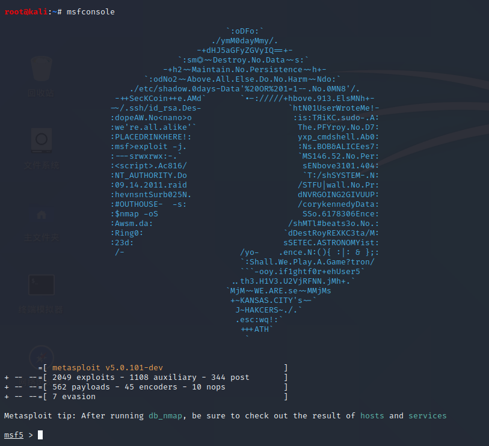
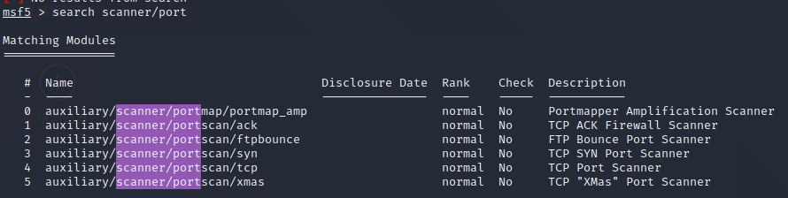
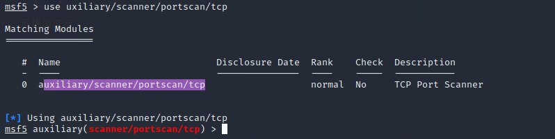
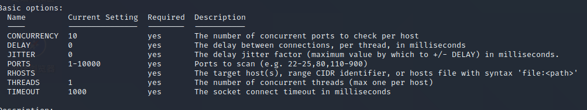
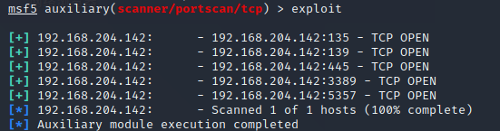
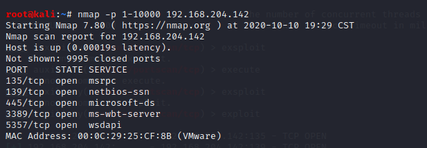

metasploit的学习与使用
metasploit简介
metasploit(Metasploit Framework)是一款开源的安全漏洞检测工具，它是完全颠覆了已有的渗透测试方式。几乎所有的流行操作系统都支持Metasploit。
metasploit下载地址，kali里面预装了metasploit。在终端输入msfconsole即可使用。
metasploit模块介绍

|模块 |作用|
|:——: |:-:|
|auxiliary|辅助模块，不会与目标机建立连接，主要用于收集信息。如，嗅探，指纹识别，扫描端口等|
|exploit |漏洞利用模块，利用系统或应用漏洞进行攻击。|
|payload |攻击载荷模块，期望目标系统在被渗透攻击之后完成实际功能的代码|
|post |后期渗透模块，在获取目标系统控制权之后进行一系列的后渗透攻击。如:获取敏感信息等|
|encode |编码模块，对攻击载荷进行免杀处理防止被防火墙发现，避免在渗透过程中出现‘坏字符’|
|nops |空指令模块，对运行程序不会造成任何实质影响的空操作或无关操作指令。如:show nops.|
POC验证程序:当互联网暴露出高危漏洞或挖出0day，为了了解漏洞的影响面，这时候就需要POC批量验证。
跳板攻击
跳板攻击:攻击者通过控制N个主机向目标机进行攻击。跳板攻击分为两类：
- 中继型跳板:这类不会对攻击者发送的包进行更改，容易被追踪发现。
- 控制型跳板:这类会对攻击者发送的包进行改变，不容易被追踪
但不论容不容易还是什么目的，在未得对方许可授权下不要对任何网站或个人进行攻击。
metasploit渗透攻击步骤
简要的说明下
- 找寻可利用的漏洞
- 选择漏洞利用模块
- 配置攻击载荷
- 选择编码技术
- 开始攻击
metasploit模块的使用
端口扫描
这里使用search scanner/port查找可以用模块。如图：

这里使用模块4.使用 use auxiliary/scanner/portscan/tcp 使用辅助模块。这个模块是基于tcp扫描的。

|扫描方式|原理|
|:-:|:-:|
|portmap_amp||
|ack|通过ACK扫描方式对防火墙上未关闭的端口进行探测|
|ftpbounce|通过ftp bounce攻击对的原理对TCP服务进行枚举|
|syn|通过发送TCP SYN标志的方式探测开放的端口|
|tcp|通过一次完整的TCP连接来判断端口是否开放，这种方式是最准确的，但是速度很慢|
|xmas|一种更为隐蔽的扫描方式，通过发送FIN.PSH和URG标志能够躲过一些高级TCP标记检测器的过滤|
使用
输入info查看模块配置信息

yes为必须输入，不可空缺。这里只需要设置RHOSTS(目标地址)使用set RHOSTS PATH，set PORTS number-number(探测的端口)。
设置完后可以使用show options查看刚才的配置。
使用exploit或者run运行模块。

这里可以只扫描了1-10000的端口。
端口状态有三种
- open:开放
- filter:过滤
- close:关闭
同时metasploit矿架中也内置了nmap接口,也可以使用nmap进行扫描

nmap扫描有个好处，他显示对应端口的服务信息。你可以根据对应端口的服务信息来找寻漏洞。